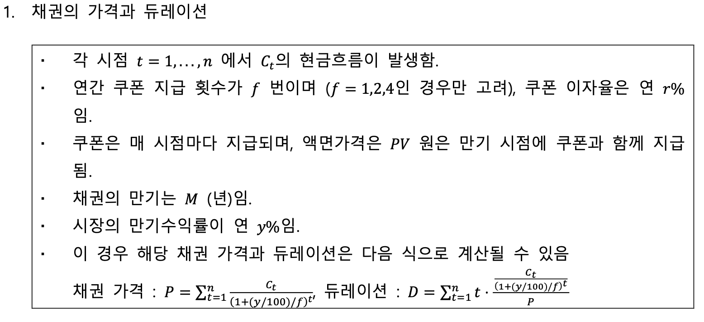
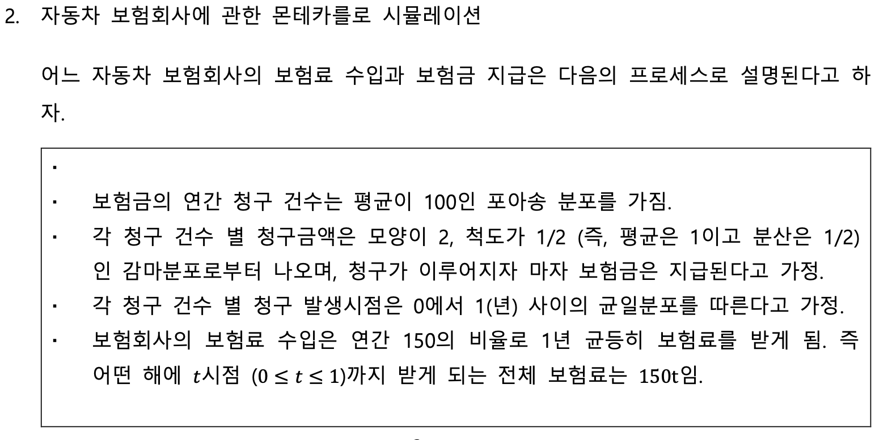

Python Midterm
20249132 김형환
Problem 1.

(1)
5개의 인자 facevalue=𝑃𝑉, couprate=𝑟, yield=𝑦, maturity=𝑀으로 입력하고, frequency=𝑓에 맞게 “annual”, “semi-annual”, “quarterly” 중 하나의 문자 값으로 입력하면, 위 식에 따라 계산된 채권가격과 듀레이션을 아래와 같은 형태의 튜플로 반환하는 함수 bondftn을 작성하여라.
def bondftn(pv,r,y,m,f="annual",rnd=3):
if type(pv)!=float and type(pv)!=int : return print("error: pv should be number!!!")
if type(r)!=float and type(r)!=int: return print("error: r should be number!!!")
if type(y)!=float and type(y)!=int: return print("error: y should be number!!!")
if type(m)!=int: return print("error: M should be integer!!!")
if f=="annual": fre=1
elif f=="semi-annual": fre=2
elif f=="quarterly": fre=4
else: return print("error: f can be 'annual', 'semi-annual', 'quarterly'")
n=fre*m
coupon=pv*r/100/fre
price=0.0
value_duration=0.0
for i in range(n):
if i==n-1: cf_i=pv+coupon
else: cf_i=coupon
pv_cf_i=cf_i/((1+(y/100/fre))**(i+1))
tw_pv_cf_i=((i+1)/fre)*cf_i/(1+(y/100/fre))**(i+1)
price+=pv_cf_i
value_duration+=tw_pv_cf_i
duration=value_duration/price
result=(round(price,rnd),round(duration,rnd))
return resultbondftn(pv=100,r=5,y=4.5,m=2,f="quarterly")(100.951, 1.916)(2)
만기 M이 5, 4, 3, 2, 1인 각 경우에 대해, 쿠폰이자율이 5%, 4%, 3%, 2%, 1% 인 각각에 대하여 만기수익률이 10%에 11%로 상승함에 따라 채권 가격의 변화율이 몇 %인지를 모두 계산한 뒤, 아래와 같은 중첩된 딕셔너리 result_dict으로 저장하여라.
단, 액면가는 100, 쿠폰 지급 횟수는 연간 1회라고 하자.
result_dict=dict()
for i in range(5):
m_i=5-i
result_dict['M='+str(m_i)]=dict()
for j in range(5):
r_j=5-j
price_before=bondftn(pv=100,r=r_j,y=10,m=m_i,f="annual")[0]
price_after=bondftn(pv=100,r=r_j,y=11,m=m_i,f="annual")[0]
price_return=(price_after-price_before)/price_before
result_dict['M='+str(m_i)][str(r_j)+'%']=round(price_return,5)
result_dict{'M=5': {'5%': -0.03974,
'4%': -0.04046,
'3%': -0.04126,
'2%': -0.04215,
'1%': -0.04314},
'M=4': {'5%': -0.03287,
'4%': -0.03332,
'3%': -0.03381,
'2%': -0.03434,
'1%': -0.03491},
'M=3': {'5%': -0.02544,
'4%': -0.02568,
'3%': -0.02593,
'2%': -0.02619,
'1%': -0.02648},
'M=2': {'5%': -0.01749,
'4%': -0.01758,
'3%': -0.01765,
'2%': -0.01776,
'1%': -0.01784},
'M=1': {'5%': -0.00901,
'4%': -0.009,
'3%': -0.009,
'2%': -0.009,
'1%': -0.00901}}result_dict['M=5']['5%']-0.03974(3)
만기 M이 5, 4, 3, 2, 1인 각 경우에 대해, 쿠폰이자율이 5%, 4%, 3%, 2%, 1% 인 각각에 대하여 만기수익률이 10%로 주어졌을 때의 듀레이션을 (1)에서의 bondftn을 활용하여 모두 계산하여라.
또한 이를 (2)에서와 동일한 구조를 가지는 (중첩된) 딕셔너리 result_dict_dur에 저장하여라.
즉 아래와 같은 방식으로 값을 추출할 수 있어야 한다. 단, 여기서도 액면가는 100, 쿠폰 지급 횟수는 연간 1회라고 하자.
result_dict_dur=dict()
for i in range(5):
m_i=5-i
result_dict_dur['M='+str(m_i)]=dict()
for j in range(5):
r_j=5-j
result_dict_dur['M='+str(m_i)][str(r_j)+'%']=bondftn(pv=100,r=r_j,
y=10,m=m_i,
f="annual",rnd=5)[1]
result_dict_dur{'M=5': {'5%': 4.48786,
'4%': 4.57019,
'3%': 4.66101,
'2%': 4.76171,
'1%': 4.874},
'M=4': {'5%': 3.6951,
'4%': 3.74653,
'3%': 3.80216,
'2%': 3.8625,
'1%': 3.9282},
'M=3': {'5%': 2.84899,
'4%': 2.87566,
'3%': 2.90394,
'2%': 2.93397,
'1%': 2.96593},
'M=2': {'5%': 1.95023,
'4%': 1.95941,
'3%': 1.96896,
'2%': 1.97889,
'1%': 1.98923},
'M=1': {'5%': 1.0, '4%': 1.0, '3%': 1.0, '2%': 1.0, '1%': 1.0}}result_dict_dur['M=5']['4%']4.57019Problem 2.

(1)
어떤 1년 동안 발생하는 모든 청구들의 시간과 금액을 모의실험해 보자.
0에서 시작하여1년 동안 보험회사의 잔고를 계산한 뒤 balance라는 리스트로 저장하여라.
단, balance의 첫번째 값은 0이며, 보험 청구가 발생하는 시점(𝑡)에만, 해당 시점의 balance (그 시점까지 받은 보험료 수익(150𝑡)을 더하고, 그 시점에서 청구로 지급되는 보험금을 빼 주는 방식)를 계산하여 순서대로 저장할 것.
Answer
먼저, 보험금의 연간 청구건수가 평균이 100인 포아송분포를 따르므로 \(pmf,\;P(X=x)=\frac{\lambda^xe^{-\lambda}}{x!},\;\lambda=100\)입니다.
다음으로, 보험금의 청구금액은 평균은 1, 분산은 1/2인 감마분포를 따르므로 \(pdf,\;f(x)=x^{k-1}\frac{e^{-x/\theta}}{\theta^k\Gamma(k)},\;k\theta=1,\;k\theta^2=1/2\)입니다. 즉, \(k=2,\;\theta=1/2\)입니다.
각 청구금액은 즉시 지급되며, 발생시점은 0~1 사이의 uniform distribution을 따르므로 \(pdx.\;f(x)=\frac{1}{1-0}=1\)입니다.
이제, 1년간 발생하는 보험손익의 모의실험에 대한 청구건수(포아송분포)를 \(N\)번이라고 하고, 청구금액(감마분포) 및 청구시점(균등분포)를 각각 \(g_i\)와 \(t_i\; for\; 1,...,N\)라고 하면, \(t=t_i\) 시점의 balance는 아래와 같이 계산됩니다.
\[{balance}_{t_i}=150t_i-\sum_{k=1}^{i}g_k\]
또한, 기말시점(t=1)의 최종 balance는 \(150-\sum_{all\;k}g_k\)가 됩니다.
# 포아송, 감마, 균등분포에 다한 모의실험은 numpy의 random module 활용
import numpy as np
from numpy import random as rd
rd.seed(0) # seed를 설정하여 통제
N=rd.poisson(lam=100,size=1)
N=N[0]
t=rd.uniform(low=0.0,high=1.0,size=N)
t=np.sort(t)
g=rd.gamma(shape=2.,scale=0.5,size=N)
balance=[0] # balance의 초기값은 0
for i in range(N):
balance.append(round(t[i]*150-sum(g[:i+1]),4))
balance.append(round(150-sum(g),4)) # balance의 기말값print(balance[:5],balance[N-5:],sep="\n")[0, -1.9755, -2.1182, -2.7092, -3.9799]
[44.5214, 47.2399, 48.4395, 48.2655, 47.6871, 48.74, 50.4839](2)
위 모의실험을 10000회 반복하여 다음에 대한 확률을 추정해 보자.
보험회사가 최종적으로 가지게 되는 balance의 기대값(모의실험을 10000회 반복하였을 때 각 모의실험마다 계산된 balance의 최종값들의 평균으로 추정)은 얼마인가?
보험회사의 balance가 1년 중 한번 이상 -5 이하로 떨어질 확률(10000회의 모의실험 중에서 balance가 -5이하로 떨어진 적이 있었던 경우의 비율로 추정)은 얼마인가?
Answer
평균은 약 49.86, -5이하로 떨어질 확률은 약 7.05%입니다.
last_balance=list()
minus5_balance=0
for k in range(10000):
rd.seed(k)
N=rd.poisson(lam=100,size=1)
N=N[0]
t=rd.uniform(low=0.0,high=1.0,size=N)
t=np.sort(t)
g=rd.gamma(shape=2.,scale=0.5,size=N)
balance=[0]
for i in range(N):
balance.append(round(t[i]*150-sum(g[:i+1]),4))
last_balance.append(round(150-sum(g),4))
balance.sort()
if balance[0]<=-5:minus5_balance+=1
print(sum(last_balance)/10000,
minus5_balance/10000,sep="\n")49.864134890000095
0.0705